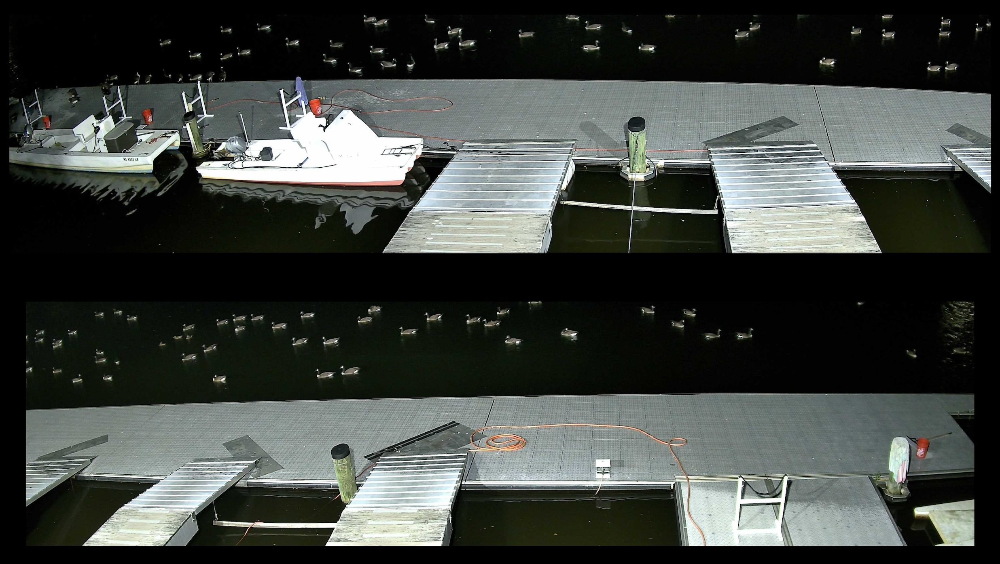
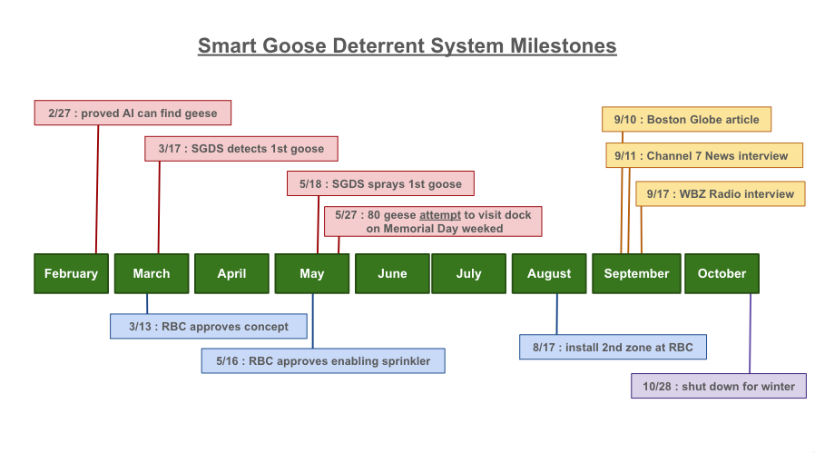
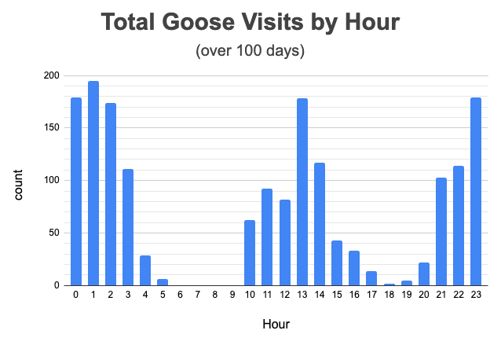
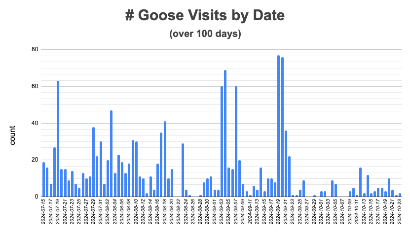

Smart Goose Deterrent System
Smart Goose Deterrent System
September 11, 2025
SGDS keeps ~25 geese off dock!
August 17, 2025
Almost 100 geese wanted nothing to do with Riverside Boat Club's dock. They have learned that they can not outsmart the Smart Goose Deterrent System.

August 9, 2025
The other day, my friend was walking his dogs by a perfectly manicured lawn. It had one of those signs with a dog squatting. It said "no poop please". He called me and said, “You should tweak the Smart Goose Deterrent System to spray dogs that poop and pee on people’s front yard". I told him I was already kinda doing that.
There was a stray dog that used to do his business in my backyard. I tweaked the configuration on my SGDS QA environment to consider dogs as unfriendly animals and let the system do its thing. It was funny watching video of that stray dog getting sprayed the first time. He did not know what hit him. He looked over his shoulder and gave the sprinkler a WTF look. Then the sprinkler came back around and hit him again. It’s been eight weeks since that dog visited.
I am a dog owner. Dogs pooping in a neighbors yard is an owner problem not a dog problem. Owners should not let their dogs out unattended or unleashed. Owners should clean up after their dogs.
I think the thing to do if SGDS finds a dog pooping in your yard is to make sure sprinklers are aimed outward and hit the owners.
FYI, my QA environment watches for deer around my garden too.
July 23, 2025
I am not a goose hater, I just don’t like it when they poop on my rowing club’s dock.
The other day I texted an attaboy to another member of my club when he shooed away geese from the corner of our dock. I jokingly wrote to him, don’t worry, “harassing” geese is not in violation of the Migratory Bird Treaty Act. This spurred an interesting conversation between me and another member of my club. They said “harassment” is a violation of the MBTA. We started dueling each other with Google searches, each finding results that supported our position. Some findings mentioned “harassing” birds as a violation of the law and others did not. This confused me. In the end I went to the Cornell Law School website and read the original MBTA statute. Then I examined the changes to the statute over the years. No mention of “harassing” as a violation. Finally, I noticed that some of our search results were for the MBTA and others were for the Endangered Species Act. The MBTA does not include "harassing" as a violation, the ESA does. Bingo!
The Canada Goose was considered an endangered species at one time, but removed from the list in 2001.
Interesting (or maybe not) in June 2024 the Chevron Doctrine was overturned. This took away the ability for government agencies, like the U.S. Fish and Wildlife Service, to interpret the “their own” laws and put it in the hands of the courts. As recently as May 2025, the courts were arguing the meaning of the key words “harm” and “take” in the Endangered Species Act. “Take” includes “harass” in the ESA definition. This whole thing gets messier than a dock visited by a flock (or should that be a gaggle, skein, wedge, or team) of geese.
I am not a goose hater, nor am I a lawyer. I will likely never dig so deeply into the Migratory Bird Treaty Act again. I definitely consider yelling at geese or spraying them with water as “harassment” and fair game. Hopefully I will not end up behind bars for creating a system that uses AI to spray geese. My “take” is, if we do not want geese in “our” space, we need to outsmart them, not harm them.
June 17, 2025
"Love catching them before they even land! That’s perfect." AW
June 12, 2025
"The system works great, you should get a Noble (Nobel?) Prize for what you have done." LR
May 2025
SGDS has been online at the Riverside Boat Club for several weeks this year (their second season with SGDS). The new cameras are performing better than expected:
May 2025
We are working with the Nereid Boat Club in Rutherford, NJ to install SGDS on their dock.
Jan 2025
We've spent the winter making improvements to SGDS. We are getting closer to a shrink-wrapped product.
Jan 2025
November 2024
Now that the rowing season is coming to an end, let's reflect back on the progress we made with the Smart Goose Deterrent System in 2024.
We appreciate working with the Riverside Boat Club in Cambridge, MA. They provided an ideal environment for testing: lots of geese, rowers, cooperation, and feedback.
SGDS started as an idea in February, and quickly evolved into a system that worked remarkably well.

All along the way, we examined every frame of data collected by SGDS, to make sure it was behaving as desired. We found out that we needed to teach the AI how to deal with some interesting situations:
We learned that geese are very persistent. They constantly tested the boundaries of the SGDS sprinklers. They learned exactly where they could hang out and be safe. On some mornings, you could see what looked like a hundred geese swimming by the dock, just out of range of sprinklers.
We examined data from the 2nd half of the season. Geese visited at all hours of the day, mostly when people were not on the dock. Most RBC rowers launch in the morning and evening so we disabled sprinklers in those windows.

In the 2nd half of the season, SGDS found geese over 1400 times (77 times on the busiest day).

If you believe a goose produces 1 pound of poop per day, hangs out for 4 hours when it visits the dock, and travels in groups of 4 or more: we estimate that we kept 2000 pounds of poop off the dock!
On these cold November mornings, SGDS is shut down. Sadly, the geese are back, and they are making a mess of RBC's dock. The cold weather rowers have had to learn to sweep poop again (and they might not be as quick to learn as the geese). We are happy knowing SGDS made a difference for RBC this season and look forward to doing battle again next year.